Przedmiotem sprzedaży jest auto mojej żony Ford Explorer w najbogatszej i jedynej słusznej wersji PLATINUM. Jest to auto ze wszystkimi bajerami jakie ma ford w swojej ofercie. Jest dużo bogatszy od FORDA Explorera ST.
Tylko w platinium sa Adaptacyjne skrętne reflektory Full LED (w całej reszcie są zwykłe). Tylko tu są wysokogatunkowe skóry nappa na desce , boczkach i fotelach z wstawkami tri daimond (w reszcie jest cerata i wieszchnia część foteli z skóry)
tylko w tej wersji sa wstawki z drzewa .
Elegancką stylistykę zewnętrzną podkreśla atrapa chłodnicy w kolorze satynowego aluminium i 21 calowe fegi . chromowoane 4 końcówki wydechów
Proszę zwrócić uwagę jak wygląda z dołu jak nowy i najważniejsze jest to wersja w której most tył montowany jest na 4 śruby na dwie tylnie poduszki , bo w 21 roku księgowi się wzieli do roboty i tylni most później jest na jednej poduszce co się nawet kończy urwanym mostem
Explorer Platinum posiada też bardziej komfortowe (mniej sztywne) zawieszenie i nastawy układu kierowniczego niż wersja ST, a multikonturowe fotele z Active Motion czy 960-watowe nagłośnienie Bang & Oluffsen uczynią każdą podróż komfortową
Moc silnika to 365 km jest to v6 3 litry z dwoma turbinami tak zestrojone ze skrzynia (10 biegowy automat forda ) aby jazda była czystą przyjemnością . Te auto płynie i nawet przy 140 wciszkasz pedła gazu w podłoge i on dalej ciągnie bez końca , a jest to kiosk na kołach.Jak komuś mało to zwykły program silnika i jest 500 koni. Na forach w usa opisuja co te silniki potrafią
Kolejną zaleta auta jest 7 miejsc pełnowymiarowych . Tu 7 osób jedzie wygodnie nawet w ostatnim rzędzie . Ostatni rząd jest rozkładany elektrycznie.
Auto zostało sprowadzone na indywidualne zamówienie w 2021 roku ze stanów. Delikatnie uszkodzone było przodem . Wszystkie części były kupione w ASO Ford w Polsce (są na to fv).
Auto używane prywatnie przez kobietę . Sprzedawane tylko wyłącznie ze względu na zmianę na nowszy.
Nie jest to auto kupione na "handel" a dla własnych rodzinnych potrzeb (4 dzieci więc okręt jest potrzebny).
Samochód jak widać wygląda jak nowy i ma minimalny przebieg na który daje gwarancję że jest autentyczny.
Nic nie kombinowane auto od prywatnej osoby
Auto regularnie serwisowane . raz w roku wymiana oleju i filtrów standardowo. W aucie z kwietniu zostały zaktualizowane oprogramowania sterowników , aby zapewnić jak najlepsze działanie w serwisie forda.
dla zainteresowanych udostępnię VIN Jest to najbogatsza wersja . To jest takie ST ale premium dlatego jest w USA droższa o ponad 5 tys dolarów netto , czym się różni : ma bardziej kulturalne zawieszenie , lepiej jest wytłumione od ST , w środku zamiast ceraty na desce czy na boczkach wszędzie jest mięciutka skóra nappa , fotele to też mięciutka skóra nappa , auto jest dużo cichsze . Platinium jest taki ugrzeczniony na full opcji . Takie premium forda . tylko w platinium są światła adaptacyjne , one nawet w europejskich autach są nie dostępne tylko platinium ma takie oświetlenie . skrętne z doświetlaniem , pełny automat. Ford w 100 % przystosowany na rynek europejski ( pełna konwersja licznik, radio, język światło przeciwmgielne itp ) Auto praktycznie nowe ma 15 tys przebiegu Bardzo Bogate Wyposażenie m.in.
- Masaże w Fotelacj przednich -MASAZE !!! - bez kluczykowy dostęp i odpalanie - odpalanie samochodu na odległość - fotele z pamięcią ustawień - masaże foteli przód - grzane i wentylowane fotele - elektrycznie regulowana kierownica - elektrycznie regulowane i składane lusterka - elektrycznie podnoszone i składane tylne fotele - grzana kierownica - apple carplay , android auto - czujniki parkowania przód - tył - kamery 360 - samochód sam parkuje - elektryczna tylna klapa z funkcja otwierania ruchem nogi - ładowarka telefonu bezprzewodowa - aktywny tempomat - dach panoramiczny - auto hold -hak i fuknkcja specjalna do holowania - możliwość wyboru trybów jazdy - wysokiej klasy sprzęt grający firmy Bang&Olufsen
-Silnik: 3.0l GTDI V6 Ecoboost Twin-Turbo (368 KM, 515 Nm)
-Skrzynia: aut. 10-biegowa SelectShift
-Napęd: AWD + tryby jazdy (Terrain Management System)
-Koła: 21-calowe
-Układ wydechowy z czterema końcówkami
-Rozpórka kielichów przednich
-Lakier Magnetic Metalic
-Tapicerka skórzana Sandstone Leather
-Wykończenie kabiny drewno (Woodgrain)
-Kierownica multimedialna, obszyta skórą, podgrzewana
- 3 Fotele drugiego rzędu
-Fotele przednie multikonturowe, ogrzewane i wentylowane
- Fotele trzeciego rzędu składane elektrycznie
- Klimatyzacja automatyczna trzystrefowa
- Dach panoramiczny dwuczęściowy (Twin Panel Moonroof)
- Oświetlenie ambientowe kabiny
- Cyfrowe zegary 12 cali
- System multimedialny SYNC3 z ekranem centralnym 10.1 cala, GPS, USB, Bluetooth, CarPlay / Android - - Auto, sterowaniem głosem
- System audio Bang & Oluffsen (14 głośników, 960W)
- System kamer 360 z Active Park Assist 2.0
- Czujniki parkowania (PDC)
- Reflektory adaptacyjne LED Signature, automatyczne
- Światła przeciwmgłowe LED
- Oświetlenie tylne LED
- Systemy bezpieczeństwa Ford CoPilot360 Assist
- Satynowy grill (tylko w wersji Platinum)
- Podświetlane listwy progowe
- Lusterka zewnętrzne elektryczne, składane, podgrzewane, z podświetleniem, pamięcią, z funkcją automatycznego ściemniania
- Lusterko wewnętrzne z funkcją automatycznego ściemniania
- Trailer Tow Package + system stabilizacji przyczepy
- Stabilizacja pojazdu przy wietrze bocznym
- Fordpass z WiFi / LTE / hotspotem
- Dostęp bezkluczykowy do samochodu + zdalne odpalanie
- System mocowania fotelika ISOFIX / LATCH
- Klapa bagażnika elektryczna, z dostępem bezdotykowym -4 x isofix !!!
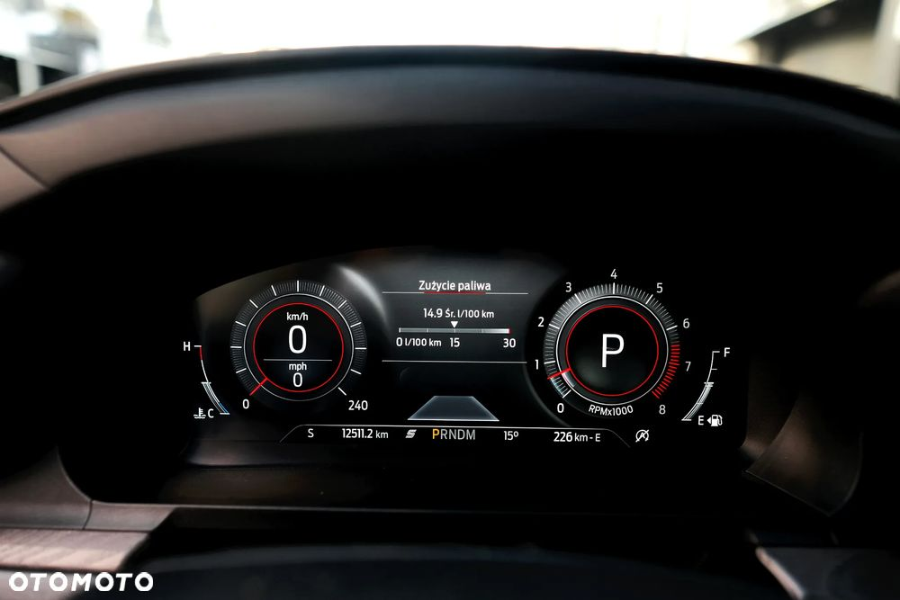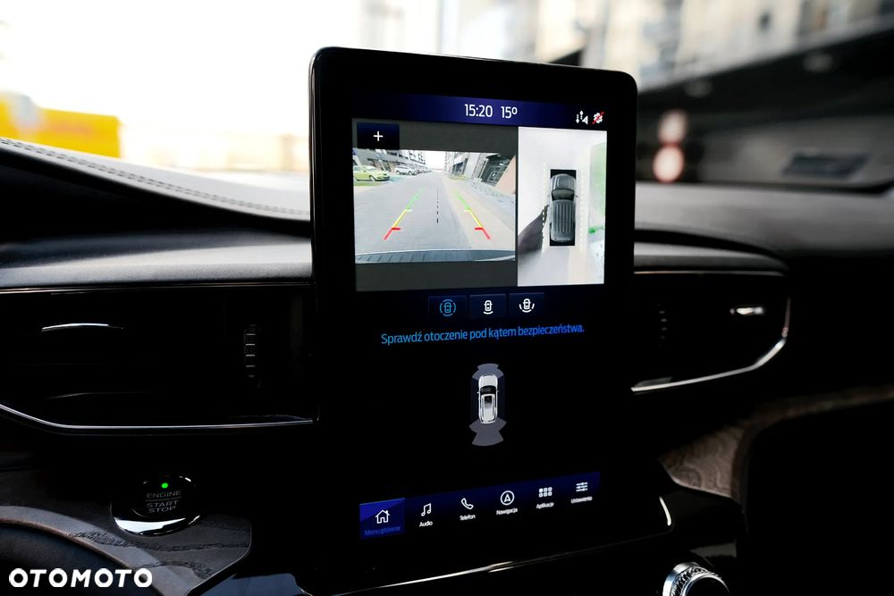 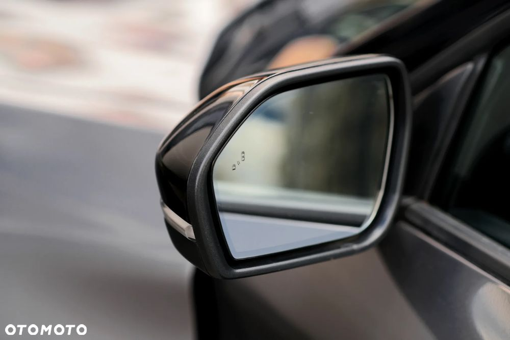
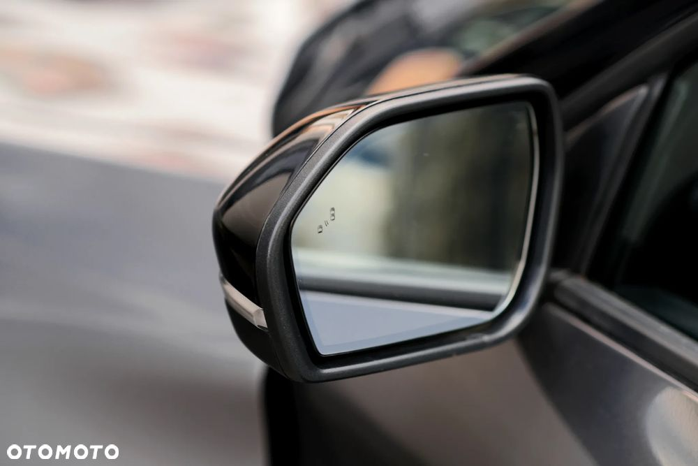 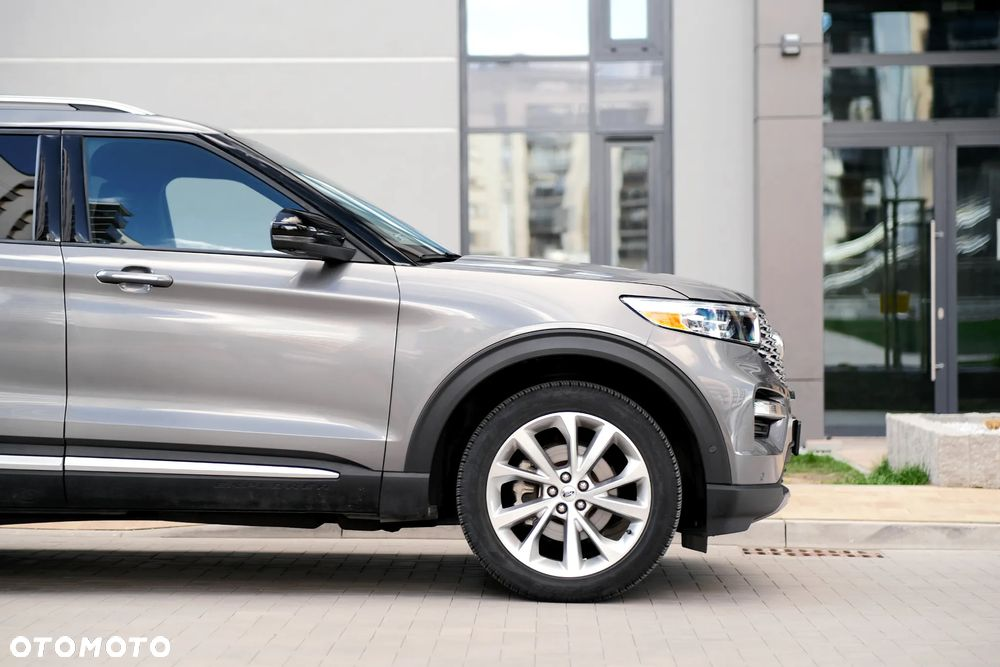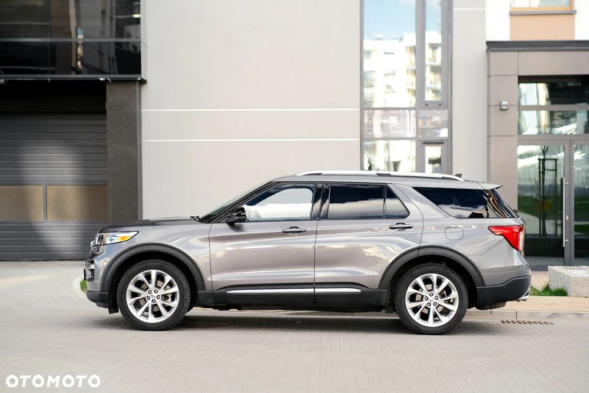
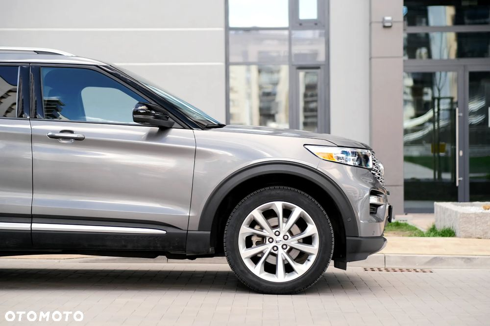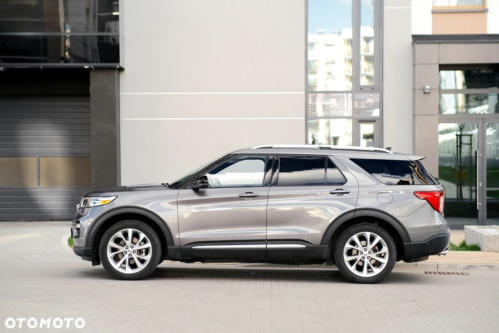
 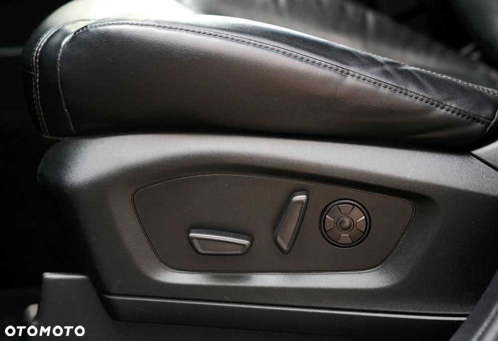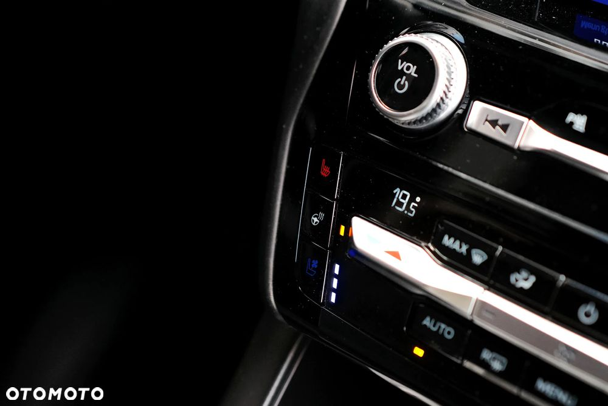
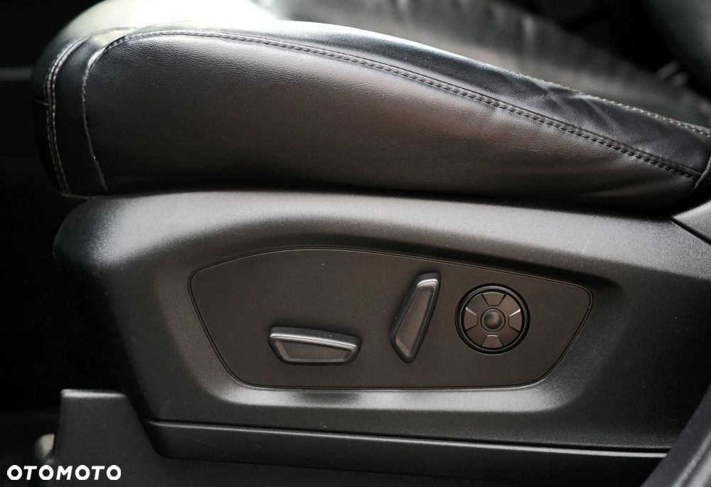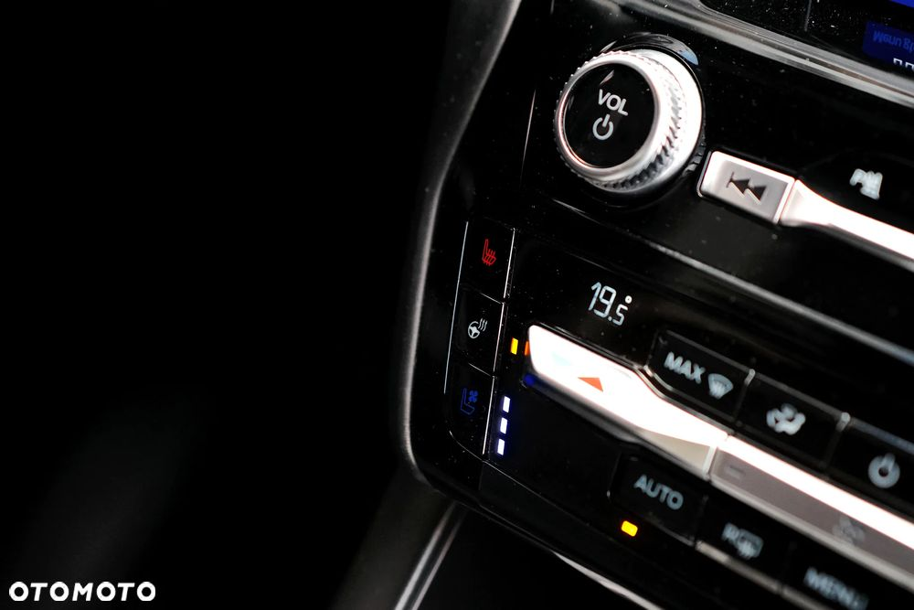